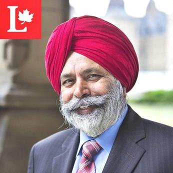
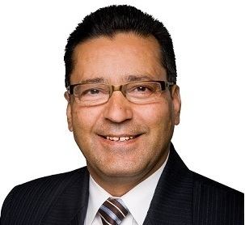
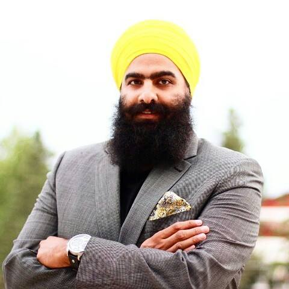
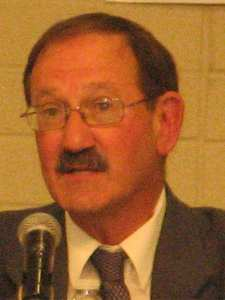
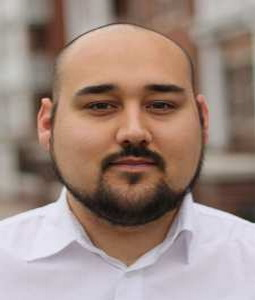
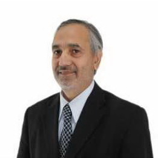

My Riding: Calgary Skyview
| 
Darshan Singh Kang
Darshan Singh KangParty: LiberalDarshan Kang immigrated from India in 1970, he was a former Member of the Legislative Assembly for Calgary in 2008 and 2012 – McCall. As an MLA, he served on a number of standing committees, including Public Accounts, and Families and Communities. Darshan is also the Critic for Transportation, Service Alberta, Infrastructure, Tourism, and Parks and Recreation. His community engagement extends to participating as a member of many Calgary Community Associations, and being an active supporter of the Heart and Stroke Foundations. |

Devinder Shory
Devinder ShoryParty: ConservativesDevinder Shory was born in Barnala, Punjab, India. Before moving to Canada, he earned a Bachelor’s of Law Degrees. After living for some years in Canada, Devinder set up his own general law practice in Calgary Northeast. He became strongly involved in his community, he pointed students and foreign-qualified individuals in the right direction as part of his law practice and was recognized by the Law Society of Alberta for his contributions. Devinder is a recipient of the Alberta Centennial Medal and he has been recognized many times for his community leadership. He was elected by Calgarians to the House of Commons in 2008 and again in 2011. He also made contributions to the Strengthening Canadian Citizenship Act. |
|
Ed Reddy
Ed ReddyParty: Green PartyEd Reddy has been a resident of Alberta since 1996, when he moved from the Atlantic Provinces where he spent ten years in the Canadian Armed Forces as a reservist member. He has served with the United Nations in 1988 in a peacekeeping effort in Iraq, and in Doha Qatar in 1991. He retired as a reservist in 1997. In 2011 he worked as the social media coordinator for the Green Party. Over the years he has been part of many clubs and worked in many different kinds of jobs. He is also been self-employed working as a management consultant for Cenovus Energy Inc. (oil and gas company). Currently, he is the Chairperson for SAIT’s Information Technology Software Advisory committee. |

Sahajivir Singh
Sahajivir SinghParty: NDPSahajvir Singh is a community organizer, a successful businessman, and serves as a member of a Calgary Police Advisory Board. He is greatly involved with various charitable and non-profit organizations focused on education and community development. Mr. Singh has also has 15 years of volunteer experience with a local youth group. His priorities are in strengthening pensions, protecting good jobs, growing the middle class and decreasing small business tax. |
|
Stephen Garvey
Stephen GarveyParty: Democratic Advancement PartyMr. Stephen Garvey is the Leader of the Democratic Advancement Party of Canada. He was born in Montreal, Quebec and has a Bachelor’s degree in Political Science as well as a Master’s degree in Environment and Development. Stephen has authored a number of books on philosophy, society, politics, and democracy. He was a member of the Canadian National Rowing Team, and has worked in the forestry industry in the reforestation sector. |

Joseph Young
Joseph YoungParty: IndependentHe is campaigning as a member of the Communist League, and a frequent contributor to its newspaper, The Militant. Young is an active in radical left politics. Young has campaigned for federal, provincial and municipal office in Ontario and British Columbia, but has not won any of therm. In 1991, he was the Communist League's candidate for Mayor of Toronto. He was a member of the New Democratic Party's youth wing and the Young Socialists (the youth wing of the League for Socialist Action) in the early 1960s, and led a successful campaign to allow high school students to form political clubs. |

Daniel Blanchard

Daniel BlanchardParty: Marxist–Leninist PartyNot Enough Information Avaliable |

Najeeb Butt
Najeeb ButtParty: Progressive Canadian PartyNot Enough Information Avaliable |